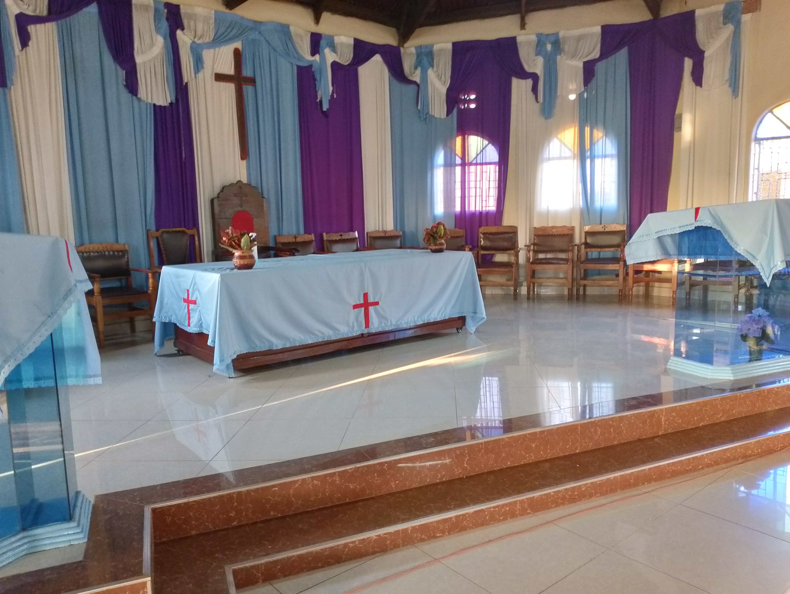
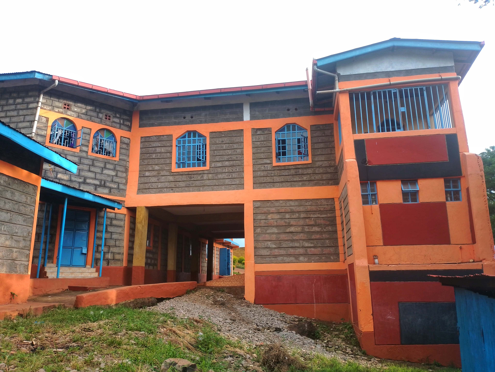

chairperson
About Us
Here is a brief history of the church, its progress and growth over the years.
A Brief of P.C.E.A Sabasaba Church

The idea to have P.C.E.A SABASABA Church was conceived by the Kirk session of the then large Muthithi Parish in 1986. One year later in 1987 a plot measuring 0.10 hector was purchased by P.C.E.A Maganjo on behalf of Muthithi Parish.
The consecration ceremony was held on 13th Sept. 1992. It was presided over by the late Rev George Thuo Muhoro and Rev Francis Nyangi. The first congregation service was held on 20th Sept. 1992: Those present during the service were 30 adults and 20 Church school children. They worshipped in a make shift made of cut offs which also served as seating forms supported by stones
The Church had three districts namely:
- SABASABA
- GATUKUYU
- GATHURI
The first elders were:
- Elder James Muiruri Mburu - Chairman
- Elder Joseph Ndung'u Kanyotu - Secretary
- The Late Elder Peris Magiri Muiruri

They were assisted by the following deacons:
- Mrs Charity Wambui Mbugua
- Mrs Lydiah Wairimu Mungai
- Mrs Marion Wangari Maina
- Mrs Beth Njoki Maina
- The late Mr Joseph Waithaka Gatimu
- Mrs Emily wanjiku Ndungu
Members of development committee were:
- The late Shadrack Muchoki
- The late Nahashon Muturi
- The late Eliud Mbugua Mburu
- The late Virginia Wairimu
- Mr Eliud Mbugua Mutega
- Mrs Rebeccah Waithira Ndiba
As the church continued to grow, more deacons and development committee members were added. They included:
- Mr John Ngigi Wagocho
- Mr Moses Ndung'u Marandi
- Mrs Susan Nyambura
- The Late Mrs Phoebe W. Ngigi
- The Late Alfred Kiriro
Construction of the sanctuary being dedicated today started in 1994; the foundation stone was laid on 15th October 1995 by then Moderator of the Murang’a Presbytery Reverend Gibson Gichuki Mwangi.
The congregation is made up of six districts namely;
- Sabasaba A
- Sabasaba B
- Sabasaba C
- Sabasaba D
- Sabasaba E
- Gatukuyu
We also have some elders who have retired and they are;
- John Ngigi Wagocho
- Phoebe W. Ngigi
- Charity Mbugua
- Moses Marandi
The retired deacons are;
- Mrs Rebecca Gitau
- Mrs Beth Njoki
- Mr Joseph Ndung'u Kahuthu
- Mrs Peris Kamande
- Mrs Miriam Watiri
- Mrs Emily Wanjiku
- Mrs Netah Njeri
- The Late Rosemary W. Jeremiah


Progress/Growth
We thank God for he has enabled us to grow spiritually, numerically and materially.
Spiritually most of our members have been baptized, confirmed and confess Jesus Christ as their Lord and Saviour. The theme (Haggai 1:5) has constantly reminded us to consider our ways.
Numerically we have realized a tremendous growth and even given birth to the newest congregation in the Parish that is Gathuri P.C.E.A Church, which is now exactly one year old this month.
terms of membership we are about 150 members since two of our former districts that is Gathuri East and Gathuri west were released to form Gathuri congregation.
In terms of material development we have managed to purchase nine plots that surround the Church, two of them have permanent structures. Although the purchase of Gathuri plot was done by the Parish Kirksession the construction and furnishing of Gathuri sanctuary to its completion was wholly supported by P.C.E.A Sabasaba
Through the support given by members and well-wishers we have been able to construct a perimeter wall around the Church (this has enhanced security) We have been able to construct a modern vestry with an underground classroom. We have also managed to put up modern toilets.
Currently we are putting up a four storeyed rental house; it is a momentum project and although we are stuck at the basement we know that with God’s grace and members support we will one day complete that project because we have the will, determination and faith to do it.
We therefore boldly proclaim that “This far God has helped us.” (1 Samuel 7:12)
Our Services
We have an amazing line-up of services. Our church is always open as from 7:00 am every sunday.
Sunday School
An awesome place for the young ones to learn the Christian doctrines and practices
From : 9:00 AM
To : 10:00 AM
English Service
Welcome all and let us worship together.
From : 9:00 AM
To : 10:00 AM
Kikuyu Service
Welcome all and let us worship together.
From : 10:30 AM
To : 12:30 PM
Our Team
Our ever-vibrant L.C.C team
Secretary
Charity Njeri

Treasurer